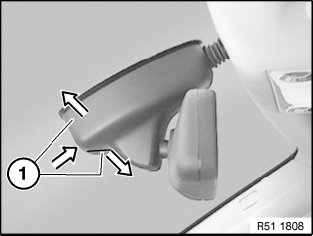
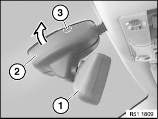
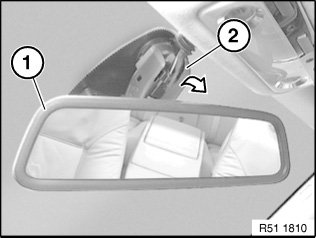
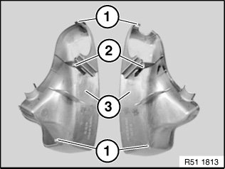
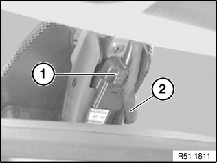
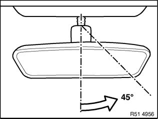

51 16 060 Removing and Installing/Replacing Inside Mirror (With Rain Sensor)
51 16 060 Removing And Installing/Replacing Inside Mirror (With Rain Sensor)

IMPORTANT:
- Work may only be carried out at a room/object temperature of 18 ... 28° C.
- If this can not be guaranteed (cold/hot countries), it is necessary to equalise the temperature of the windscreen, mirror base and inside mirror (e.g. vehicle left to stand indoors or in the shade for at least 30 minutes).

Version with remote key for central locking system:
If necessary, disconnect negative lead from battery.
Version with compass:
Check compass function if replacing or after disconnecting inside mirror plug connection or battery.
If necessary, calibrate compass in interior rearview mirror.
E60 Security version:
Rain sensor is not installed, cable connection is tied back in headlining.
IMPORTANT:
To avoid windscreen breakage:
- Screw inside mirror off mirror mount.
- Inside mirror must not be pulled or pressed off towards front or rear.

Press on end caps (1) and at same time press them apart; this releases clip connection of both caps (1).

Twist inside mirror (1) at an angle towards front and right/top.
Swivel left end cap (2) off ball neck in direction of arrow; this detaches the engagement clip (3) from the metal foot.

Twist inside mirror (1) at an angle towards front and left/top.
Swivel right end cap (2) off ball neck in direction of arrow; this detaches the engagement clip from the metal foot.

Installation note:
Clips (1) and retaining hooks (2) of end caps (3) must not be damaged, replace if necessary.

Disconnect plug connection (1).
NOTE: Pay attention to cable routing (2) for rain sensor.
E60 Security version:
Rain sensor is not installed, cable connection is tied back in headlining.

IMPORTANT: Do not pull or press inside mirror off towards front or rear.
Twist mirror base approx. 45° to right until mirror base is released from mirror mount.

Installation note:
1. Twist mirror foot by approx. 45° and fit to mirror base .
2. Turn mirror base until it engages on mirror mount.
Only in case of replacement with version with remote control for central locking:
If necessary, initialise all transmitters (ignition keys), refer to Owner's Handbook.